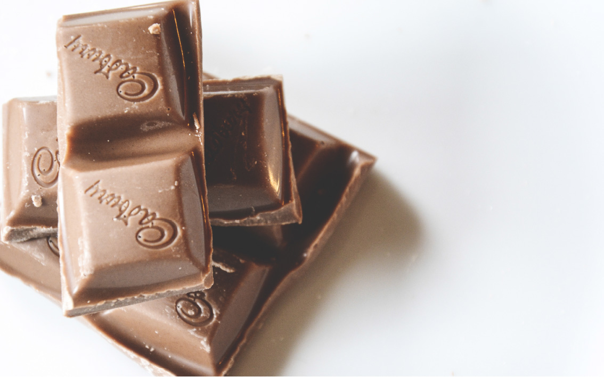

CONTOURCULTURE

Kate Vietze
Can You Even Holiday?
An insight into holidays you’ve probably never heard of.
When I think about holidays, the first things that pop into my mind is Christmas, Halloween, Eeaster and pretty much all of the western holidays that I have celebrated far before I even knew what the holiday was even about. Those holidays have been pretty much a staple throughout my year and help to get me through the passing months and I always have something to look forward to. But it only just occurred to me that there are more than likely holidays that I have never even heard of before.
The thought that other people have been celebrating holidays since they were a kid and I haven’t even heard of it before completely and utterly baffled me. In this amazing and culturally diverse world, I can only wonder what the world has to offer when it comes to celebrations and holidays.
Only a few weeks ago did I discover a holiday celebrated in the UK called Guy Fawkes Night, which is celebrated on November 5th. I only just discovered this as I am planning a trip to the UK and my Mum happened to mention that we were going to be there CANon this particular holiday. This amazed me that I had never heard of this holiday as my Mum and her side of the family are all from the UK, (great job at making me culturally aware, Mum). Nevertheless, after some intensive research I was able to find what the heck this holiday was all about. To put it simply, there was apparently this guy named Guy Fawkes back in the 1600s who planned to blow up the Parliament of England in an attempt to kill the current king.
However, his plans were interrupted by some guy who thought that this wouldn’t be a good idea (which I think is mighty selfish because who doesn’t like big explosions?). As a result he was given the ultimate punishment at that time and was tortured and executed for his crimes. However, and this is the interesting part here, people started to light bon fires and set off fireworks each year on the anniversary of this occasion to celebrate that he pretty much failed at an attempt on the kings life. Which, when you think about it, is kind of a cruel and heartless way of celebrating for the king as the thought of him being blown up had just past his mind and now all of a sudden the whole of the UK was on fire. I’ll leave this holiday up for interpretation.
"I can tell you oranges hurt, a lot."
It is more than likely that everyone has heard about the Throwing of Tomatoes festival that is held every year in Spain. However, it is even more likely that you haven’t heard of its slightly more painful brother, Battle of the Oranges that is held in Italy in the month of February. This extreme festival has some unclear origins, however there is speculation that it is the city’s disobedience towards the tyrant back in the 12th Century. The main celebration is based in the city where the townspeople are divided into nine different groups. They then pretty much wail on each other with oranges, throwing them quite violently. As painful as it sounds, this doesn’t discourage people from getting involved in it every year. At the end of the festival, tradition shows that the “General” of the carnival says their goodbyes and closes by saying “arvedse a giobia a ‘n bot” which translates to “we’ll see each other on Thursday at one”, this refers to when the festival will start next year. In my personal opinion, this seems to be a festival that I would much rather watch than participate in. Having had an orange thrown at my face at the age of 15 by a softball pitcher, I can tell you that oranges hurt, a lot. I think I have plans in the future to avoid this pain again and will more than likely skip out on this one if the opportunity ever arose.
"...sounds better than an orange to the face."
Staying on the topic of food, I had found a festival in the Ukraine that is held every year circulated around chocolate. I think I nearly died when I first heard this, as if I didn’t even know this was a thing! Apparently the festival, known as Lviv Chocolate Festival, goes for a delicious four days and is pretty much a way for the country to show of their fancy chocolate making skills.
Chocolatiers come out at this festival to reveal their most marvellous creations, from luxury chocolates to giant chocolate fountains to pretty much whole towns made out of chocolate. The festival hasn’t been around for very long, so I am not surprised that I haven’t heard of it up until now. However, this is one I am defiantly not going to forget. I will make sure that I pop around to the Ukraine at some point to indulge in this festival, sounds better than an orange to the face or nearly being set on fire.